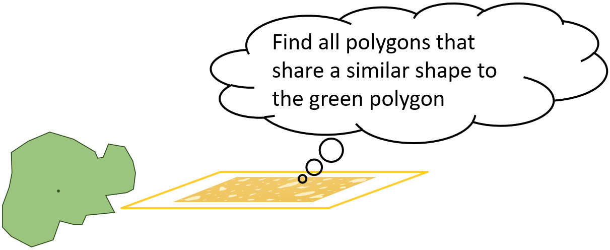

IEEE BigData 2025Acceptance rate 18.7%
ShapeToVec: shape similarity search at scale
Shape-based similarity queries over large GIS datasets. This needs feature vectors that preserve shape and area. However, polygon areas in real polygonal datasets span exponential ranges and uniform rasterization fails at both ends. ShapeToVec encodes each polygon on a quadtree-based non-uniform grid that adapts resolution to local vertex density, and searches with weighted Jaccard distance implemented natively inside an HNSW index. It reaches 97% recall on top-50 queries over 1.7 million polygons. We are the first system to perform shape-based Jaccard similarity search at this scale.